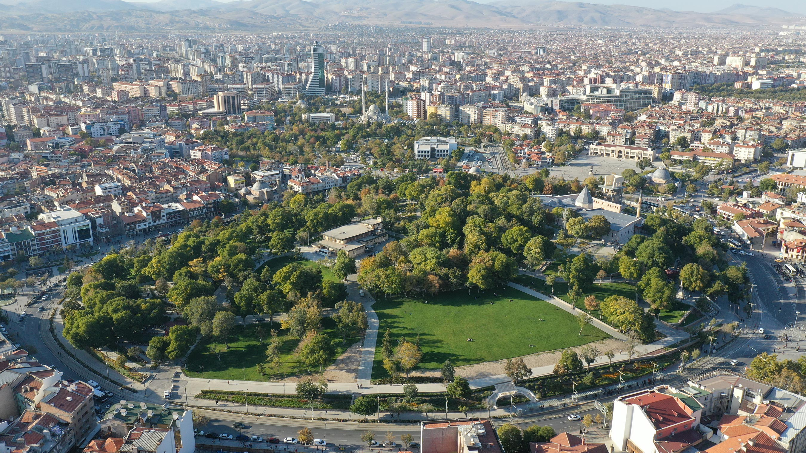

📄 Halid Yazıcı'nın çalışmasının tamamına ulaşmak için tıklayın.Konya’nın Kalbi: Alaaddin Tepesi 🌳✨
Konya şehir merkezindeki en yeşil ve en huzurlu alanlardan biri Alaaddin Tepesi’dir. Burası en yaşlısından en gencine kadar herkesin çimlerde oturup sohbet ettiği, yaz sıcağında ağaç gölgesinde serinlediği harika bir yerdir! 🍃👨👩👧👦
Bu Tepe Nasıl Oluştu? 🤔🌋
Peki, bu tepe doğal mıdır? Hayır! Dümdüz Konya ovasında böyle bir tümsek tepe aslında bir "Höyük"dür. Höyük; binlerce yıl boyunca insanların aynı yere üst üste evler yapması, bu yapıların yıkılıp kalıntılarının üst üste birikmesiyle zamanla yükselen yapay bir tepedir. 🏗️📜
Alaaddin Tepesi'nde yaşam tam 10.000 yıl önce, yani Neolitik Çağ’da başlamıştır! Önce kerpiçten minik evler yapılmış, sonra Romalılar gelip tiyatrolar kurmuş, daha sonra ise Selçuklular burayı başkent yaparak saraylar inşa etmişlerdir. Kısacası bu tepe, tarihin üst üste dizilmiş bir pastası gibidir! 🍰🛡️
Tepedeki Tarihi Hazineler 🕌💎
Günümüzde tepede görebileceğimiz çok önemli yapılar vardır:
- 🕌 Alaeddin Camii: Konya'nın en eski ve en büyük camisidir. Selçuklu sultanları tarafından yaptırılmıştır.
- 👑 Selçuklu Sultanları Türbesi: Caminin avlusunda bulunan, on köşeli yapısıyla dikkat çeken bu türbede sekiz büyük Selçuklu sultanının mezarı bulunur.
- 💧 Su Deposu: Konya'nın su sıkıntısını çözmek için 1902 yılında halkın yardımlarıyla açılmış tarihi bir yapıdır.
- 🏰 Alaeddin Köşkü: Eskiden sultanların yaşadığı devasa sarayın bir parçasıdır. Bugün sadece küçük bir bölümü ayakta kalmıştır ama bir zamanlar Topkapı Sarayı'na bile ilham verdiği söylenir!